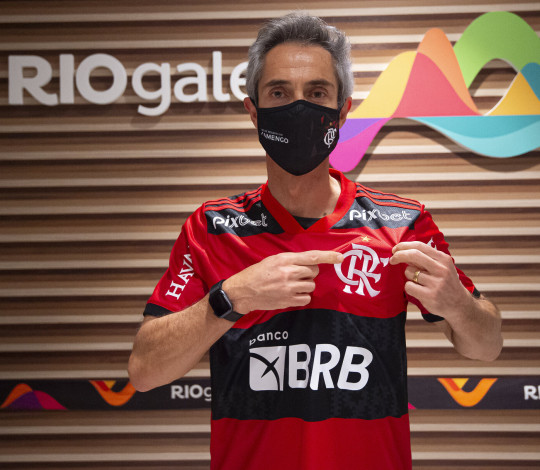
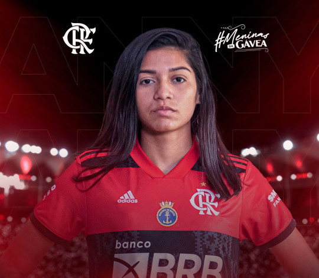
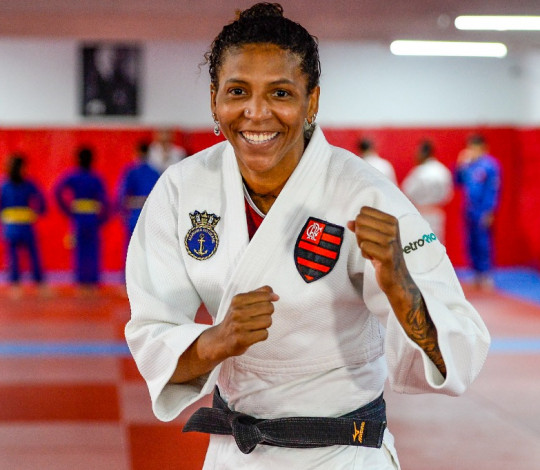

futebol
ingressos
sócio-torcedor
flamenguista
basquete
esportes olímpicos
fla tv
lojas
o clube
Futebol

Paulo Sousa desembarca no Rio de Janeiro e inicia sua trajetória pelo Flamengo.
Treinador português irá conhecer as instalações do Ninho do Urubu ainda nesta sexta-feira (7).
Futebol feminino

Anny Marabá chegou!
Judô e karatê

Rafaela Silva é convocada para duas competições internacionais
institucional
Torcedor rubro-negro já pode comprar o pacote do Cariocão na FlaTV+